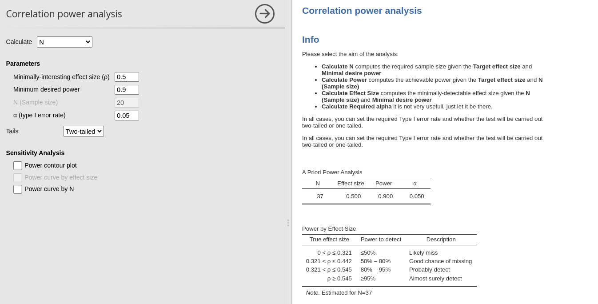
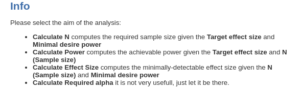
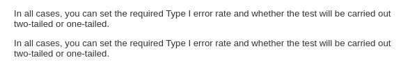
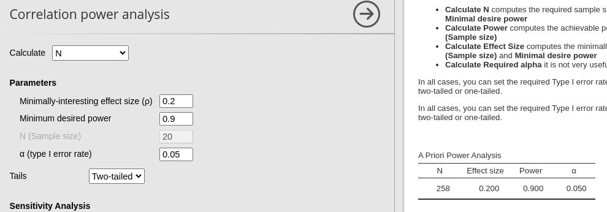
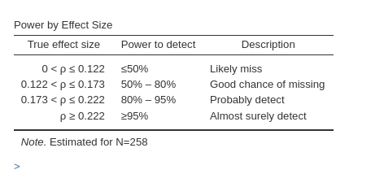
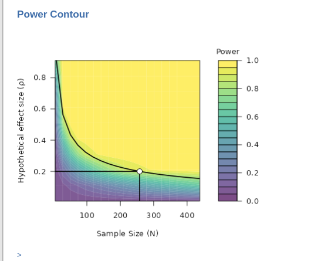
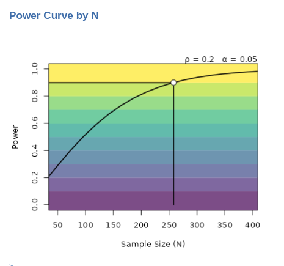
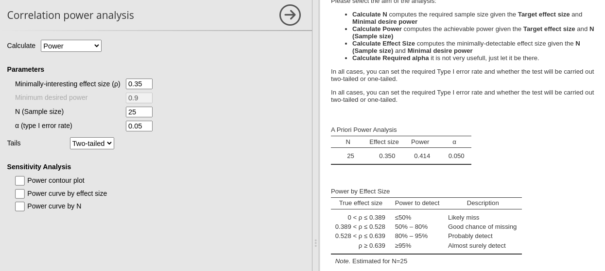
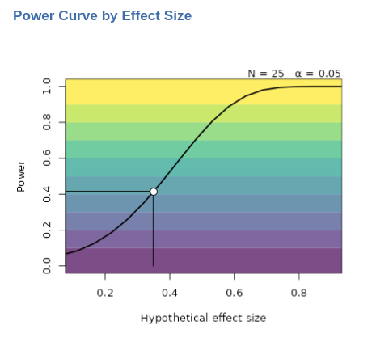
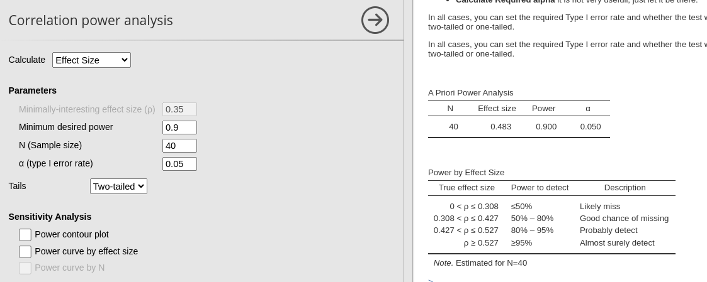

Correlation
Power Analysis
0.2.0

Correlation allows for computing power parameters for
testing the Pearson or Spearman correlation coefficient. The initial
step is to determine the objective of the analysis ( aim ).
Further details regarding different objectives can be found in the
Info results field.

For correlation analysis, it also suggests the following:

We start with the first aim, finding the required sample size N.
Aim: N (Required sample size)
When estimating the required sample size for planned research, it’s essential to anticipate an effect size, which can be derived from pilots, meta-analyses, etc., (but see Albers and Lakens (2017)). In the case of correlation analysis, the effect size corresponds to the Pearson correlation coefficient.
Let’s consider a scenario where we aim to estimate the required sample size (N) for a planned research project. Assuming an expected correlation of 0.20 between our target variables, and aiming for a power of 0.90 with a two-tailed test, evaluated at α = 0.05, we can simply input these parameters into PAMLj.

From the result table we can see that the required N is 258, so we need 258 case to achieve a power of .90 given an expected correlation of .2.
The second table we get is the Power by Effect Size
table, which informs us on the different power levels associated with
different possible effect sizes.

Based on the estimate \(N=258\), we should expected a very low power (\(1-\beta<.5\)) were the actual population effect size less than .122. A power of \(1-\beta<\) between .5 and .80 should be expected were our effect size be between .122 and .173. A power between .80 and .95 is to be expected if our population effect size is between .173 and .222, whereas a power greater than .95 can be expected is the population correlation is larger than .222.
Based on the estimate \(N=258\), we should expected a very low power (\(1-\beta<.5\)) should the actual population effect size be less than .122. A power of \(1-\beta<\) between .5 and .80 should the expected effect size be between .112 and .173. A power between .80 and .95 is to be expected if our population effect size is between .173 and .222, whereas a power greater than .95 can be expected if the population correlation is larger than .222.
Sensitivity analysis
Sensitivity analysis means exploring different scenarios. Power contour plot visualizes the power from low (green) to high (yellow) as a function of possible sample sizes (x-axis) and effect (correlation) sizes.

In the power contour plot, we see the solid line representing the combinations of Sample Size (N) and effect size that yields the required power (in the example .90). So we know how the power will change had we underestimated the effect size (go down in y-axis) or underestimated the sample size (go left on the x-axis).
The second plot we can ask is the Power curve by N . It
portraits how the power (y-axis) chances as one increases the sample
size (x-axis).

The solid line portraits the change in power as we increases sample size given the effect size (\(r=.2\)) and the critical alpha (\(\alpha=.05\)). In this example, for instance, we can see that if we were not able to collect more than 150 cases, our expected power will not be more than .70 (to be optimistic).
Aim: Power (posthoc power)
Post-hoc power analysis serves to evaluate the likelihood of obtaining statistically significant results after conducting research, particularly when a pre-hoc (a priori) analysis was not performed. For instance, let’s consider a scenario where a research study involves 25 participants, resulting in a Pearson correlation coefficient of 0.35, which is found to be statistically significant. In this context, post-hoc power analysis assesses the probability of consistently obtaining significant results if the research were to be replicated multiple times, drawing from the same population.
So, let’s fill in the field for Calculate: Power. The
effect size is .35, N (Sample size) is 25. The expected power is under
the column power.

The expected power, calculated as \(1−\beta=.414\), indicates that it’s less likely to replicate the results than to obtain significant results when drawing from the same population and employing the same sample size. If there are concerns about the lack of replication, increasing the sample size (N) would be recommended (Schönbrodt and Perugini 2013).
Sensitivity analysis
Power contour plot and Power curve by N have here the same interpretation as mentioned above. However, when the aim of the analysis is to find the achieved power, one can ask for Power curve by effect size.

Here, we observe the relationship between the power of the test and the effect size. The solid curve illustrates how the power may vary across different effect sizes, given a fixed sample size (\(N=25\)). In this example, it becomes evident that in our research one can consistently (i.e. \(1-\beta > .90\)) detect a significant correlation only for correlations exceeding 0.6.
Aim: Effect size
(AKA another sensitivity analysis)
In recent years, there has been a growing interest towards the minimum detectable effect size (MDES). However, there seems to be some confusion surrounding its interpretation. In a proper power analysis aimed at determining the required sample size, utilizing a minimum detectable effect size can be beneficial. To clarify, the MDES represents the smallest effect size that a study aims to detect. It involves deciding the minimum value of correlation (for example, 0.08) that would be considered meaningful. Subsequently, the sample size is determined to ensure that if the observed correlation exceeds the MDES, it would yield a statistically significant result with a specified probability (\(1-\beta=power\))
Computing Calculate: Effect size serves a different purpose—it determines the minimum effect size that can be detected as significant with a specified probability (\(1-\beta\)), given the sample size at hand. In essence, it is a post-hoc power analysis.
While this analysis may not always be necessary, it can prove useful in certain scenarios. For instance, consider a situation where only a limited sample of 40 cases was collected due to constraints such as research topic, funding, or population size. In such cases, Calculate: Effect size helps answer the question: What is the lowest effect size that would be detectable as significant with a certain probability (\(1-\beta\)) given the sample size (N=40)?
Imagine you have collected 40 cases and need to test several correlations. You can determine the lowest level of correlation that would be detectable in future studies with a probability greater than 0.90. By inputting the available information — \(N=40\), required power of 0.90 (for instance), and an alpha of 0.05 — you can obtain valuable insights.

Results show that any correlation less than .483 will be tested with a power less than .90.
Sensitivity analysis
Power contour plot and Power curve by N have here the same interpretation as mentioned above.
Return to main help pages
Main page’
Comments?
Got comments, issues or spotted a bug? Please open an issue on PAMLj at github or send me an email